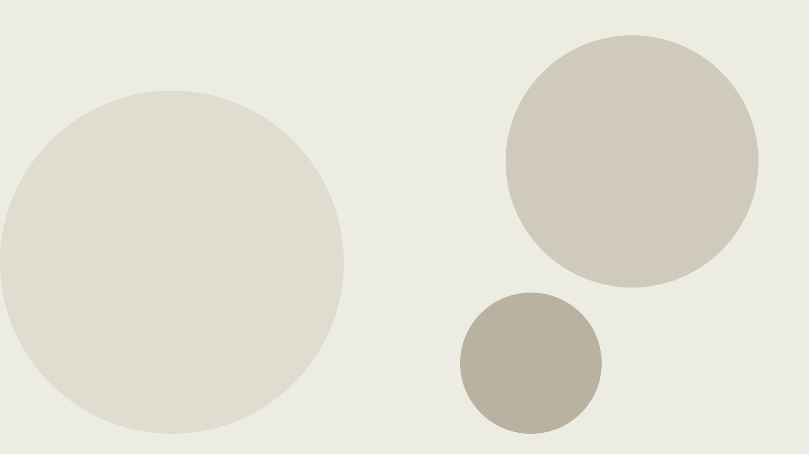
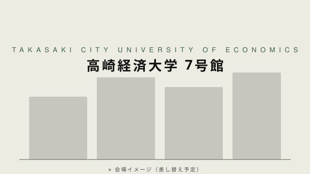

「混ざれ、そして起き上がれ」 高崎発、PoC・事業化支援プログラム始動
文系 × テクノロジー。
高崎から、文理を越える未踏の一手を。
お知らせ
D-CROSS TAKASAKI 2026 のエントリー受付を開始しました。1次募集の締切は 7月3日（金）12:00まで！
公立大学法人 高崎経済大学との連携協定のもと、群馬県高崎市にて本プログラムを開始します。

D-CROSS TAKASAKI 2026 は、群馬県高崎市および近隣地域の学生・若手人材を対象に、文系知識とテクノロジーの視点を掛け合わせ、独創的なアイデアや技術を社会実装へと発展させる PoC・事業化支援プログラムです。公立大学法人 高崎経済大学との連携協定のもと、高崎市内にてビジネス・地域課題・テクノロジーを横断的に扱い、文理融合型の実践的デジタル人材の育成を目指します。
テーマは「混ざれ、そして起き上がれ」。文系・理系を問わず、学生同士や大学・企業との協働で多角的視点を獲得し、課題設定力と実践力を備えた IT・起業家人材を最大10プロジェクト・5〜10名育成します。※ 未踏事業等の上位プログラム、起業、研究活動等へのステップアップ機会を創出します。
プログラム
高崎市および近隣地域在住の若手人材（15歳〜39歳）を対象に、AI等のテクノロジーを活用しながら、アイデアの具体化からプロトタイプ開発・実証（PoC）までを経験できるプログラムを実施します。採択されたプロジェクトは「関心起点（What）」「技術起点（How）」に分類し、それぞれに精通した PM（プロジェクトマネージャー）が5か月間伴走支援します。
本プログラム参加の5つのメリット
ユーザー検証・プロトタイプ開発・成果発表までを一貫して経験。プログラム修了時には実動するプロダクト、ピッチ経験、最終発表会（@高崎経済大学）での登壇実績が手元に残ります。
高崎経済大学の研究者、NTT グループ、国内スタートアップの経営者・デザイナー等、文理を横断する PM 陣が週1回程度オンラインを活用しながら個別に伴走。アイデアがビジネスや人脈に届く仲間になる機会を提供します。
プログラム期間中の開発に要する人件費＋国内旅費＋事務局指定の生成AIサービス利用料の三科目（すべて実費精算）への充当を基本とします。本プログラムの成果の知的財産権は参加者に帰属するので、安心してアイデアを具体化いただけます。
キックオフ合宿では東京都調布市の NTT 中央研修センタ内「NTT e-City Labo」を視察。スマートシティ／都市DXの社会実装事例を学び、自身のプロダクト構想に活かす機会を提供します。
高崎経済大学を起点に、群馬工業高等専門学校、高崎商科大学・短期大学、高崎健康福祉大学、上武大学、群馬パース大学、新島学園短期大学、育英大学・短期大学、高崎経済大学附属高等学校との学校間連携、さらに高崎市・高崎信用金庫・上毛新聞社・ラジオ高崎との共創環境を提供。デモデイ最終成果発表会はオープンイベントとして実施します。
コンテンツ
プログラム開始Day1では、こちらの施設の視察が可能です。
実施期間
2026.8.20(木) → 2027.1.22(金)
エントリー締切
1次採択: 2026年7月3日（金）12:00 まで
2次採択: ●年●月●日（●）●:● まで
※合計10プロジェクト採択予定。1次で定員に達した場合、2次募集は実施しません。
募集対象
※以下の実施場所での基本現地参加が条件となります。
実施場所
高崎経済大学 7号館（中間発表会・デモデイ最終成果発表会） 他
〒370-0801 群馬県高崎市上並榎町1300
※キックオフ合宿は NTT 中央研修センタ内「NTT e-City Labo」（東京都調布市）にて実施予定。週次メンタリングはオンライン・現地の併用。

スケジュール
7月3日（金）12:00 まで
公式ホームページ（本ページ）より申し込みを実施
締切後に、書類選考＋面談（1回）を予定
申し込みいただいた方へメールにて通知
●月●日（●）●:● まで
※1次で定員（合計10プロジェクト）に達した場合は実施しません
可能な限り1次でご応募いただくよう推奨します
申し込みいただいた方へメールにて通知
PM・メンターとの顔合わせ、プログラムの目標設定
@ NTT 中央研修センタ内「NTT e-City Labo」（東京都調布市）
スマートシティ／都市 DX の社会実装事例を体感
現在地点の可視化と、具体化・概念実証企画
@ 高崎経済大学 3か月間の成果をアウトプットし、
最終成果に向けた計画策定
@ オンライン AKATSUKI 他採択事業との横断交流
@ 高崎経済大学 デモを交えて5か月間の成果をアウトプットし、プログラム修了
統括プロジェクトマネージャー（統括PM）
プロジェクトを横断して講演・審査・アドバイス等のサポートを行います。
プロジェクトマネージャー
各プロジェクトごとにアイデアや適性に応じて担当し、各々が持つ豊富な経験からあなたのプロジェクトに関する助言・指導を行いサポートを行います。
D-CROSSコンソーシアム
統括PM・PMの体制に加え、高崎市を中心とした 産・官・学・金 の共創コンソーシアムを構築。地域イノベーションを加速します。
お問い合わせ先
お問い合わせをいただく方の情報および、お問い合わせ内容を下記に入力の上、「送信する」をクリックしてください。
追って、担当者よりご連絡差し上げます。